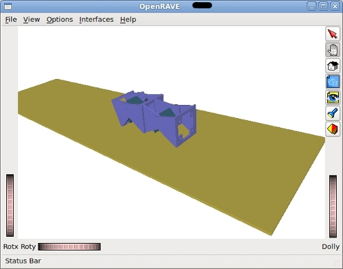

He realizado la simulación de la locomoción de Minicube-I con Openrave, pero usando un modelo real de módulos Y1, en vez del hexaédrico como en la simulación previa.
Las piezas de los módulos Y1 están hechas en Blender y de ahí se han exportado al formato Open Inventor (.iv) que puede importar OpenRave.

Todavía tengo que afinar algunos parámetros de la física, pero está funcionando bastante bien. Es la primera vez que simulo el modelo real 😉
Todos los ejemplos de prueba que estoy haciendo en c++ los estoy publicando en esta página del wiki: OpenRave y Robots modulares para que cualquiera los pueda probar
Genial Obijuan por el trabajo, gracias también por la referencia a la página la wiki.
La verdad que llevo un tiempo queriendo aprender a manejar OpenRave, lo sigo desde hace un tiempo y todo lo que veo de él tiene buena pinta.
¿Por cierto, de todos los archivos cpp que tienes cual es que usas durante los vídeos?
Hola Pablo!
Los últimos ejemplos están en el fichero:
2010-03-01-test-cpp.zip
El ejemplo test16.cpp es el que usa el modelo hexaedrico y el test30.cpp el que usa el real. Son los dos que he usado en los vídeos.
Para que te funcionen es necesario que apliques el parche que he puesto en la página del wiki. Estoy en contacto con el desarrollador principal para ver si me aceptan unas modificaciones para poder mover los robots modulares.